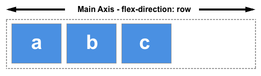
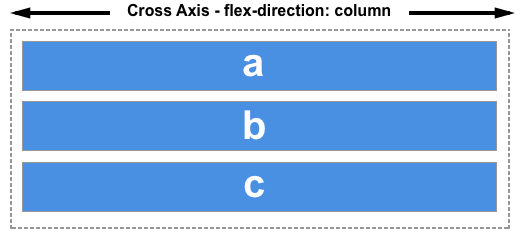

flex布局
传统的布局方案，基于盒模型，依赖display属性、position属性和float属性。其对于某些特殊的布局（如垂直居中），实现起来比较麻烦。
在 2009 年，W3C 提出了一种新的布局方案——Flex 布局（Flexible Box 布局，弹性盒子布局），其相比于传统的布局方案，更为灵活和简便。目前，Flex 布局已经得到了所有浏览器的支持。
将元素的display属性设置为flex或inline-flex后，即可开启 Flex 布局：
1 | // 块级元素 |
同时，该元素会自动成为 Flex 容器，简称容器。且容器的所有子元素会自动成为 Flex 容器成员，简称项目。项目的float、clear、vertical-align属性将失效。
容器中默认存在两根轴：主轴和交叉轴。主轴和交叉轴互相垂直，类似于平面坐标系中的 x 轴和 y 轴。项目将自动沿着主轴方向排列，排满时将沿交叉轴方向堆砌，即在交叉轴方向上换行（前提是容器flex-wrap属性不为nowrap）。
flexbox 的两根轴线
当使用 flex 布局时，首先想到的是两根轴线 — 主轴和交叉轴。主轴由 flex-direction 定义，另一根轴垂直于它。我们使用 flexbox 的所有属性都跟这两根轴线有关，所以有必要在一开始首先理解它。
主轴
主轴由 flex-direction 定义，可以取 4 个值：
- row
- row-reverse
- column
- column-reverse
如果你选择了 row 或者 row-reverse，你的主轴将沿着 inline 方向延伸。

选择 column 或者 column-reverse 时，你的主轴会沿着上下方向延伸 — 也就是 block 排列的方向。
交叉轴
交叉轴垂直于主轴，所以如果你的flex-direction (主轴) 设成了 row 或者 row-reverse 的话，交叉轴的方向就是沿着列向下的。

如果主轴方向设成了 column 或者 column-reverse，交叉轴就是水平方向。

理解主轴和交叉轴的概念对于对齐 flexbox 里面的元素是很重要的；flexbox 的特性是沿着主轴或者交叉轴对齐之中的元素。
起始线和终止线
过去，CSS 的书写模式主要被认为是水平的，从左到右的。现代的布局方式涵盖了书写模式的范围，所以我们不再假设一行文字是从文档的左上角开始向右书写，新的行也不是必须出现在另一行的下面。
如果 flex-direction 是 row ，并且我是在书写英文，那么主轴的起始线是左边，终止线是右边。
如果我在书写阿拉伯文，那么主轴的起始线是右边，终止线是左边。
在这两种情况下，交叉轴的起始线是 flex 容器的顶部，终止线是底部，因为两种语言都是水平书写模式。
Flex 容器
文档中采用了flexbox的区域就叫做flex容器。为了创建 flex容器，我们把一个容器的display属性值改为flex 或者inline-flex。完成这一步之后，容器中的直系子元素就会变为flex元素。所有 CSS 属性都会有一个初始值，所以 flex 容器中的所有 flex 元素都会有下列行为：
- 元素排列为一行 (flex-direction 属性的初始值是 row)。
- 元素从主轴的起始线开始。
- 元素不会在主维度方向拉伸，但是可以缩小。
- 元素被拉伸来填充交叉轴大小。
- flex-basis 属性为 auto。
- flex-wrap 属性为 nowrap。
这会让你的元素呈线形排列，并且把自己的大小作为主轴上的大小。如果有太多元素超出容器，它们会溢出而不会换行。如果一些元素比其他元素高，那么元素会沿交叉轴被拉伸来填满它的大小。
更改 flex 方向 flex-direction
设置 flex-direction: row-reverse 可以让元素沿着行的方向显示，但是起始线和终止线位置会交换。
把 flex 容器的属性 flex-direction 改为 column ，主轴和交叉轴交换，元素沿着列的方向排列显示。改为 column-reverse ，起始线和终止线交换。
用 flex-wrap 实现多行 Flex 容器
虽然flexbox是一维模型，但可以使我们的flex项目应用到多行中。在这样做的时候，您应该把每一行看作一个新的flex容器。任何空间分布都将在该行上发生，而不影响该空间分布的其他行。
为了实现多行效果，请为属性flex-wrap添加一个属性值wrap。现在，如果您的项目太大而无法全部显示在一行中，则会换行显示。下面的实时例子包含已给出宽度的项目，对于flex容器，项目的子元素总宽度大于容器最大宽度。由于flex-wrap的值设置为wrap，所以项目的子元素换行显示。若将其设置为nowrap，这也是初始值，它们将会缩小以适应容器，因为它们使用的是允许缩小的初始Flexbox值。如果项目的子元素无法缩小，使用nowrap会导致溢出，或者缩小程度还不够小。

简写属性 flex-flow
你可以将两个属性 flex-direction 和 flex-wrap 组合为简写属性 flex-flow。第一个指定的值为 flex-direction ，第二个指定的值为 flex-wrap
在下面的例子中，尝试将第一个值修改为 flex-direction 的允许取值之一，即 row, row-reverse, column 或 column-reverse, 并尝试将第二个指定值修改为 wrap 或 nowrap。

flex 元素上的属性
为了更好地控制 flex 元素，有三个属性可以作用于它们：
- flex-grow
- flex-shrink
- flex-basis
在考虑这几个属性的作用之前，需要先了解一下 可用空间 available space 这个概念。这几个 flex 属性的作用其实就是改变了 flex 容器中的可用空间的行为。同时，可用空间对于 flex 元素的对齐行为也是很重要的。
假设在 1 个 500px 的容器中，我们有 3 个 100px 宽的元素，那么这 3 个元素需要占 300px 的宽，剩下 200px 的可用空间。在默认情况下，flexbox 的行为会把这 200px 的空间留在最后一个元素的后面。

flex-basis
flex-basis 定义了该元素的空间大小（the size of that item in terms of the space），flex 容器里除了元素所占的空间以外的富余空间就是可用空间 available space。该属性的默认值是 auto 。此时，浏览器会检测这个元素是否具有确定的尺寸。在上面的例子中，所有元素都设定了宽度（width）为 100px，所以 flex-basis 的值为 100px。
如果没有给元素设定尺寸，flex-basis 的值采用元素内容的尺寸。这就解释了：我们给只要给 Flex 元素的父元素声明 display: flex ，所有子元素就会排成一行，且自动分配小大以充分展示元素的内容。
flex-grow
flex-grow 若被赋值为一个正整数，flex 元素会以 flex-basis 为基础，沿主轴方向增长尺寸。这会使该元素延展，并占据此方向轴上的可用空间（available space）。如果有其他元素也被允许延展，那么他们会各自占据可用空间的一部分。
如果我们给上例中的所有元素设定 flex-grow 值为 1，容器中的可用空间会被这些元素平分。它们会延展以填满容器主轴方向上的空间。
flex-grow 属性可以按比例分配空间。如果第一个元素 flex-grow 值为 2，其他元素值为 1，则第一个元素将占有 2/4（上例中，即为 200px 中的 100px）, 另外两个元素各占有 1/4（各 50px）。
flex-shrink
flex-grow属性是处理 flex 元素在主轴上增加空间的问题，相反flex-shrink属性是处理 flex 元素收缩的问题。如果我们的容器中没有足够排列 flex 元素的空间，那么可以把 flex 元素flex-shrink属性设置为正整数来缩小它所占空间到flex-basis以下。与flex-grow属性一样，可以赋予不同的值来控制 flex 元素收缩的程度 —— 给flex-shrink属性赋予更大的数值可以比赋予小数值的同级元素收缩程度更大。
在计算 flex 元素收缩的大小时，它的最小尺寸也会被考虑进去，就是说实际上 flex-shrink 属性可能会和 flex-grow 属性表现的不一致。
Flex 属性的简写
你可能很少看到 flex-grow，flex-shrink，和 flex-basis 属性单独使用，而是混合着写在 flex 简写形式中。 Flex 简写形式允许你把三个数值按这个顺序书写 — flex-grow，flex-shrink，flex-basis。

在这个教程中你可能经常会看到这种写法，许多情况下你都可以这么使用。下面是几种预定义的值：
- flex: initial（flex: 0 1 auto）不能拉伸但可以缩小 flex 元素来防止它们溢出，flex-basis 的值为 auto. Flex 元素尺寸可以是在主维度上设置的，也可以是根据内容自动得到的
- flex: auto（flex: 1 1 auto）flex 元素在需要的时候既可以拉伸也可以收缩
- flex: none（flex: 0 0 auto）元素既不能拉伸或者收缩，但是元素会按具有 flex-basis: auto 属性的 flexbox 进行布局
- flex:
你在教程中常看到的 flex: 1 或者 flex: 2 等等。它相当于flex: 1 1 0 或者 flex: 2 1 0。元素可以在 flex-basis 为 0 的基础上伸缩
元素间的对齐和空间分配
Flexbox 的一个关键特性是能够设置 flex 元素沿主轴方向和交叉轴方向的对齐方式，以及它们之间的空间分配。
align-items 属性可以使元素在交叉轴方向对齐。
这个属性的初始值为stretch，这就是为什么 flex 元素会默认被拉伸到最高元素的高度。实际上，它们被拉伸来填满 flex 容器 —— 最高的元素定义了容器的高度。
align-items属性的值：
- stretch
- flex-start
- flex-end
- center
justify-content属性用来使元素在主轴方向上对齐
justify-content属性的值：
- stretch
- flex-start
- flex-end
- center
- space-around
- space-between